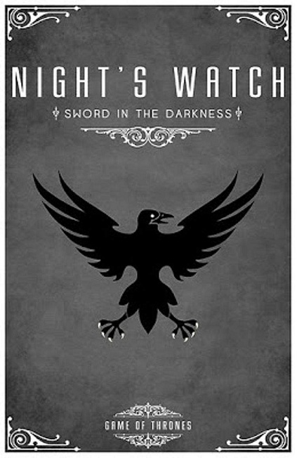

Patrulha da Noite
{kind=link}
A Patrulha da Noite é uma ordem militar dedicada à manutenção da Muralha, a imensa fortificação na fronteira norte dos Sete Reinos, e à defesa dos reinos dos homens daquilo que se encontra além dela. A fundação da ordem remonta à Era dos Heróis, quando os Outros foram forçados de volta ao extremo norte. Os homens da Patrulha da Noite vestem apenas o negro.
História
A Patrulha da Noite é provavelmente a ordem mais antiga dos Sete Reinos, tendo sobrevivido à queda dos reinos dos Primeiros Homens perante a Invasão Ândala e à Guerra da Conquista. Foi fundada há mais de 8 mil anos, após um período conhecido como A Longa Noite. Sob cobertura de uma noite sem fim que durou por uma geração, os Outros invadiram, vindos das Terras de Sempre Inverno, destruindo grande parte de Westeros, até serem derrotados pela Patrulha da Noite da Batalha da Aurora. Após a ameaça ter sido expulsa, a Muralha foi construída por Bran, o Construtor, o primeiro Stark, para proteger os reinos dos homens no caso de os Outros retornarem. Durante a Era dos Heróis, foi registrado que os filhos da floresta dava à Patrulha 100 adagas de obsidiana todos os anos. Além da corrupção do 13º Senhor Comandante, chamado de Rei da Noite, os ataques dos Outros nunca vieram. Ao invés, os ataques mais frequentes vieram dos selvagens, por vezes liderados por seus reis e suas constantes tentativas de fazer uma incursão no Norte. Pouco a pouco, a Patrulha começou a esquecer que sua principal missão não era lutar contra o Povo Livre, mas contra os Outros. Com o passar dos anos, o propósito da Patrulha se tornou menos óbvio, e seu contingente diminuiu cada vez mais, com a maioria dos Sete Reinos negligenciando a Muralha. Apenas o Norte, e particularmente os Stark, tem a lembrança dos antigos tempos, mas mesmo eles acreditam que os Outros não passam de vagas figuras em histórias contadas para assustar crianças. Houve um tempo em que a Patrulha ostentava dezenove castelos ao longo dos quinhentos quilômetros da Muralha, com mais de dez mil homens entre eles. Apenas Castelo Negro comportava cinco mil, com seus cavalos, servos e equipamentos. Os nobres dos Norte tradicionalmente consideravam uma honra servir na Patrulha. Muitos filhos caçulas das casas nortenhas, distantes da linha de sucessão, vestiam com prazer o negro. Trezentos anos após a conquista de Aegon, apenas três castelos permanecem em uso, e os números da Patrulha minguaram e hoje não passam de mil. Mas isso não é tudo. A Patrulha hoje é, em grande parte, composta dos desajustados dos Sete Reinos: plebeus, devedores, traficantes, estupradores, ladrões, assassinos e bastardos. Pouquíssimas casas nobres ou cavalheirescas do sul do Gargalo tem membros na Patrulha da Noite, e a maioria lá serve porque lutaram no lado errado de uma guerra ou sofreu com maquinações políticas. Segundo o Grande Meistre Pycelle, a Muralha é um mundo a parte, e as notícias geralmente a alcançam atrasadas.